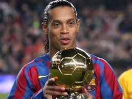
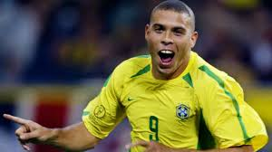

Diciembre 24 2018
 La FIFA lo destacó como el mejor jugador del mundo después de recibir el premio al Jugador Mundial de la FIFA (FIFA World Player) dos veces consecutivas en 2004 y 2005. También se le reconoció con el premio "Rey de Europa" tres veces consecutivas (2004, 2005 y 2006) mientras jugaba para el FC Barcelona, así como también en 2013 se le declaró "Rey de América" jugando para el Atlético Mineiro. La prestigiosa revista francesa France Football le concedió el Balón de Oro en 2005, premio que le acreditaba como el mejor de Europa, mientras que la revista británica World Soccer le otorgó el premio World Soccer al mejor jugador del mundo en 2004 y 2005. La misma revista le declaró mejor futbolista del mundo de la primera década del siglo XXI (2000-2010)Diciembre 24 2018
 Conocido como «el Fenômeno» Fue galardonado con el Premio FIFA World Player en tres ocasiones (1996, 1997, 2002), con la Bota de Oro (1997), y el Balón de Oro como mejor jugador del mundo en 1997 y 2002. Asimismo, fue designado como el mejor jugador de la Copa Mundial de 1998 y como máximo goleador de la Copa Mundial de 2002, entre otros premios. En dicho torneo, el más prestigioso a nivel del selecciones del mundo, fue su máximo goleador histórico con quince goles, hasta que en 2014 fue superado por el alemán Miroslav Klose. Es también el segundo goleador histórico de la selección brasileña con 67 goles, a diez de los logrados por Edson Arantes do Nascimento Pelé.12